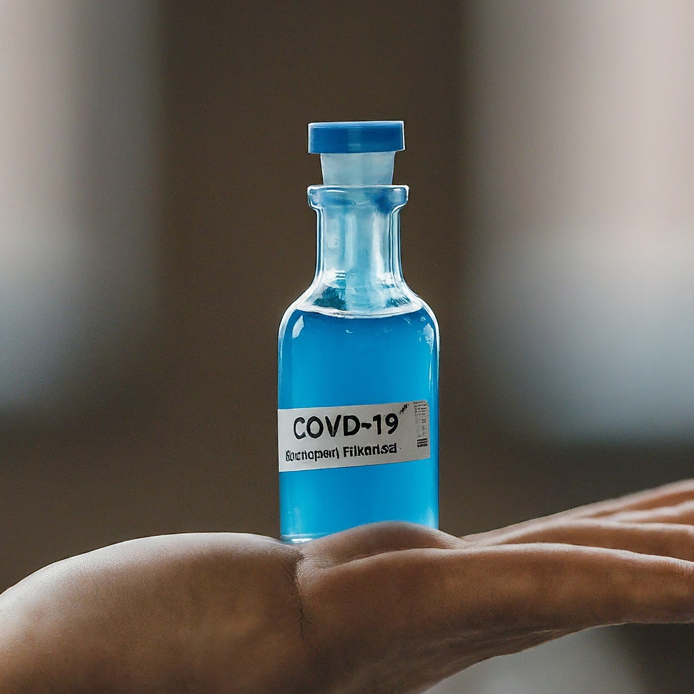

Treating COVID-19
Most people with COVID-19 have mild illness and can recover at home. You
can treat
symptoms
with over-the-counter medicines, such as acetaminophen or ibuprofen, to
help feel better.
If you have COVID-19 and are more likely to get very sick from COVID-19,
treatments are available
that can reduce your chances of being hospitalized or dying from the
disease. Medications to treat COVID-19 must be prescribed by a
healthcare provider or pharmacist and started within 5 to 7 days after
symptoms appear. Contact a healthcare provider right away to determine
if you are eligible for treatment, even if your symptoms are currently
mild.
Don't delay: Treatment must be started within 5 to 7 days of when you
first develop symptoms.
People who are more likely to get very sick include
-
older adults (ages 50 years or older, with risk increasing with
age),
-
people who are unvaccinated or are not up to date on their COVID-19
vaccinations,
-
and people with certain medical conditions, such as chronic lung
disease, heart disease, or a weakened immune system.

Treatment
-
Mild Cases: Most people with COVID-19 will experience mild
symptoms and can recover at home with rest, hydration, and symptomatic
treatment, such as fever reducers.
-
Severe Cases: Hospitalization may be necessary for those with
severe symptoms. Treatment might include oxygen therapy, antiviral
medications, and corticosteroids to reduce inflammation.
-
Monoclonal Antibodies and Antivirals: For certain high-risk
patients, treatments like monoclonal antibody therapy and antiviral
drugs can help reduce the severity of the disease if administered
early in the course of infection.
-
Supportive Care: For those in critical condition, intensive
care support, including mechanical ventilation, may be required.